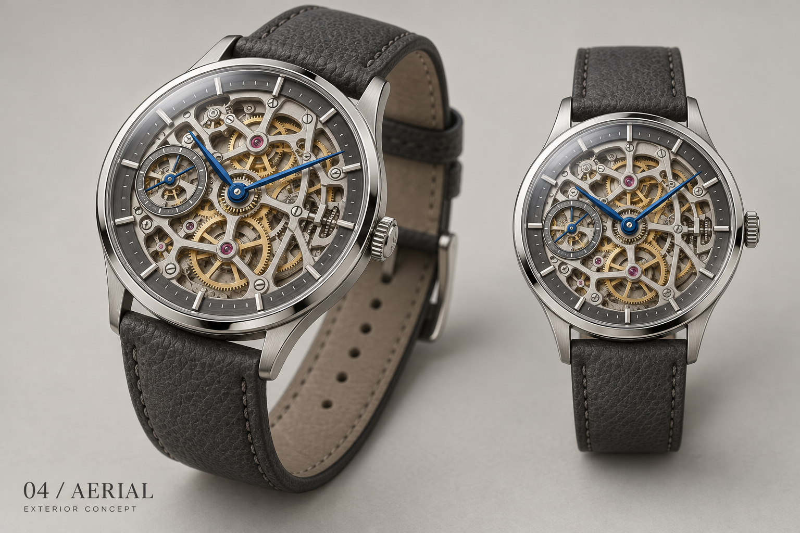

From the chosen image to the model.
Revision 02 refines the rounded case, flowing lugs, flat silver framework, blue hands and pebbled charcoal leather. Rotate or zoom the model on the right to inspect its shape and finishes.
01 / SELECTED CONCEPTAERIAL · 04

The approved visual direction. Its internal mechanism was imagined in the design image.
02 / LIVE MODEL · REVISION 02
Original Aerial exterior around the real OM10. Selected source covers are hidden for this presentation. Drag to rotate · scroll to zoom.
The model follows the exterior design direction; it is not an exact reconstruction of the image. The real OM10 gear layout and component shapes remain intact. New exterior parts remain separately animatable. This is a visual prototype, with mechanical fit and manufacturing details still to be engineered.